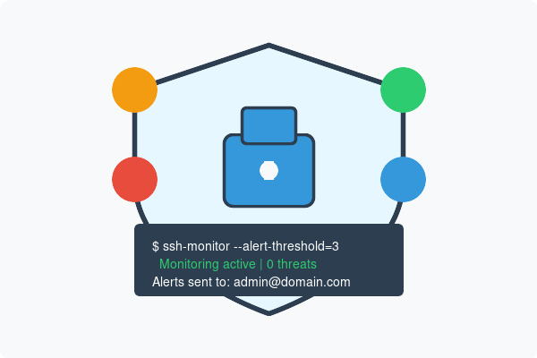

Detect unauthorized access attempts, track user activity, and receive instant alerts for suspicious behavior with our comprehensive SSH monitoring solution.
Monitor login attempts in real-time and receive immediate alerts for suspicious activities like brute force attacks or unauthorized access attempts.
Track and log all SSH sessions, commands executed, and file transfers to maintain a complete audit trail of server activity.
Configure alert thresholds and notification preferences to focus on the security events that matter most to your organization.
Set up automated responses to security incidents, such as blocking IP addresses after multiple failed login attempts.
SSH is a primary target for attackers seeking server access. According to SSH.com, servers face hundreds to thousands of break-in attempts daily, with SSH being a common attack vector.
Many regulatory frameworks like PCI DSS, SOC 2, and HIPAA require monitoring of privileged access. SSH monitoring helps meet these compliance requirements by providing detailed audit trails of all server access.
Not all threats come from outside your organization. According to the Verizon Data Breach Investigations Report, approximately 34% of data breaches involve internal actors.
When security incidents occur, rapid detection and response are critical. SSH monitoring provides the visibility needed to quickly identify and address security issues.

Below is a complete, production-ready Bash script for monitoring SSH login attempts and sending alerts via Forward Email. This script can be easily customized to fit your specific security requirements.
sudo nano /usr/local/bin/ssh_monitor.sh
Paste the script above and save the file.
sudo chmod +x /usr/local/bin/ssh_monitor.sh
Edit the configuration variables at the top of the script to match your environment:
EMAIL_TO to your administrator email addressEMAIL_FROM to your alert sender addressFORWARD_EMAIL_API_KEYsudo crontab -eAdd the following line to run the script every 10 minutes:
*/10 * * * * /usr/local/bin/ssh_monitor.shsudo /usr/local/bin/ssh_monitor.shCheck the log file to verify it's working:
tail /var/log/ssh_monitor.logBelow is a curated list of popular tools for SSH monitoring and security:
All of these tools can be configured to send alerts through Forward Email's SMTP service or HTTP API. This provides:
For implementation examples, refer to the SSH monitoring script provided above.
Learn More About Forward EmailReceive immediate notifications when suspicious SSH activity is detected. Our system sends real-time alerts for login failures, unusual access patterns, and potential security breaches.
Get instant notifications of suspicious SSH activity as it happens, not hours or days later.
Define what constitutes suspicious activity based on your organization's security policies.
Receive comprehensive information about each security event, including IP addresses, usernames, and timestamps.